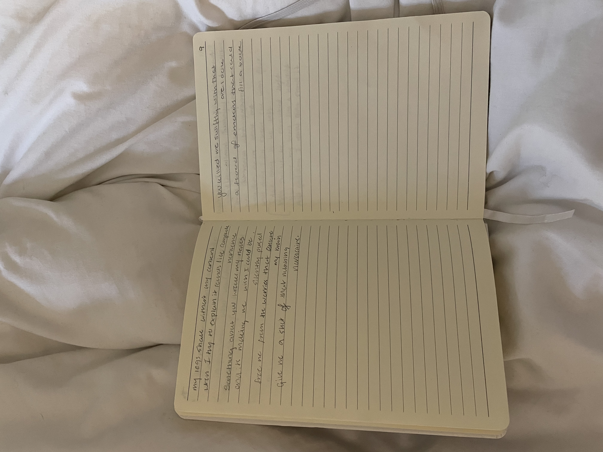
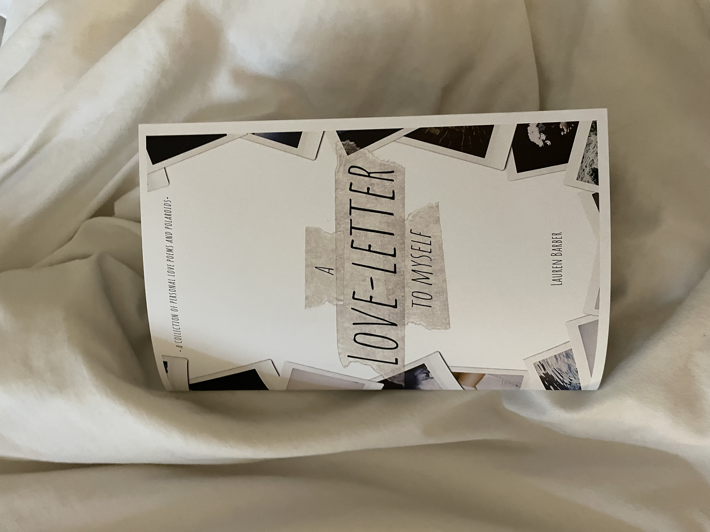
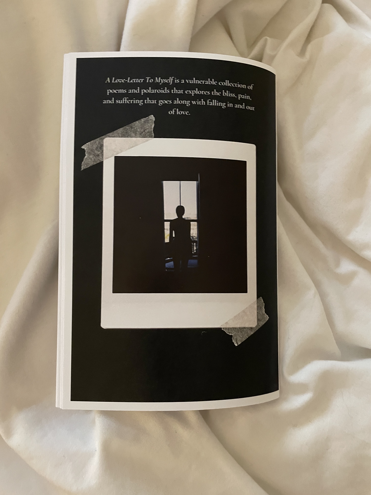
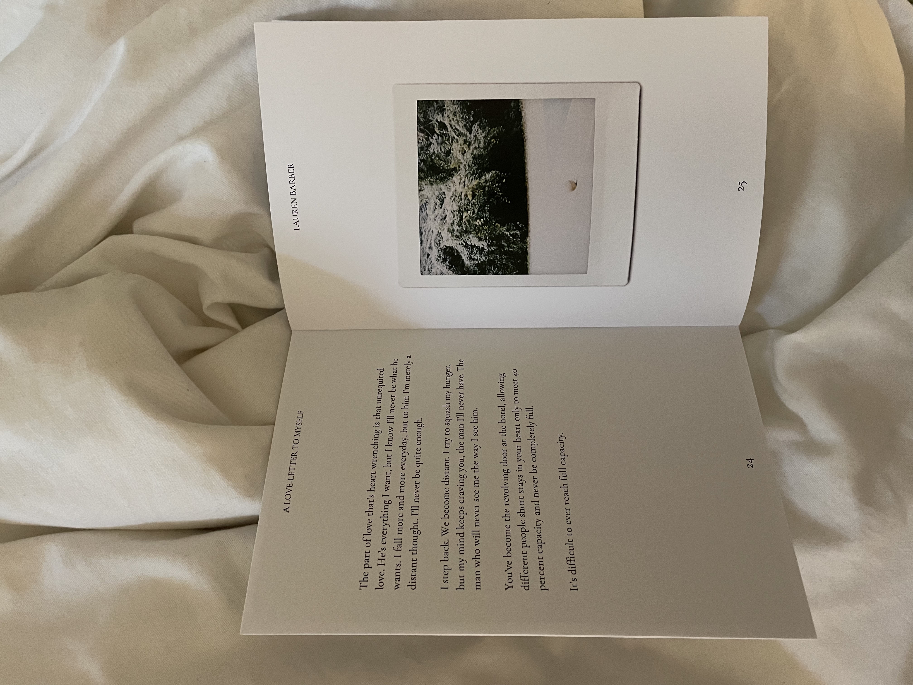
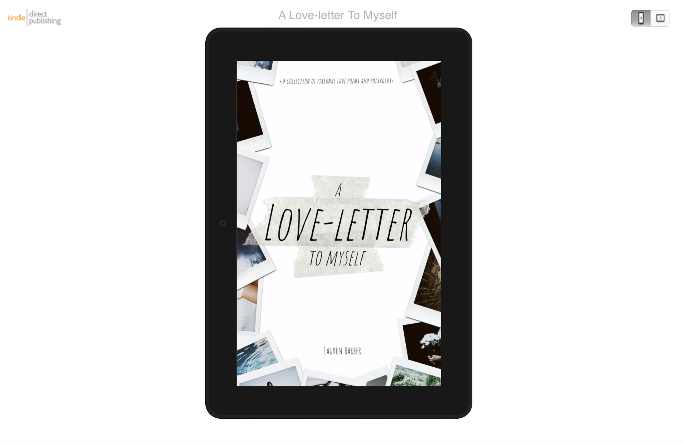
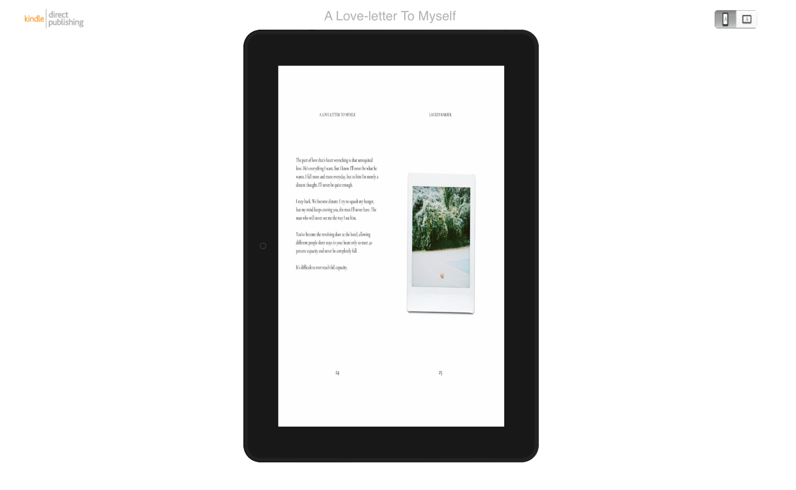
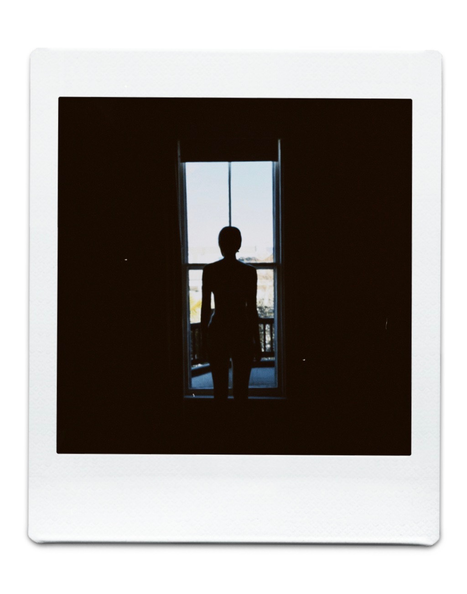

A Love-letter To Myself
A collection of personal love poems and polaroids
So, what is this book?
For this project I wanted to explore the world of poetry and bookmaking. A Love-Letter To Myself is a vulnerable collection of poems and polaroids that explores the bliss, pain, and suffering that goes along with falling in and out of love. Before I could even start making this book I studied three theories: poetic theory, theory of photography, and book-making theory.
POETIC THEORY:
Before I began to compose my poetry I took the time to study classic poetry theory to the likes of Aristotle along with a guide on how to write-poetry. I then also took inspiration from my two favorite poetry books at the moment, "Home Body," by Rupi Kaur and "I Hope You Stay," by Courtney Peppernel to help me figure out what direction I wanted to go. I decided on what is considered more "new-age," Tumblr style poetry which has become increasingly popular in the past decade.
Sources:
The Poet's Companion: A Guide to the Pleasures of Writing Poetry by Kim Addonizio, Dorianne Laux
Aristotle's Theory of Poetry and Fine Art by By Samuel Henry Butcher, Aristotle, John Gassner
Home Body by Rupi Kaur
I Hope You Stay by Courtney Peppernell
THEORY OF PHOTOGRAPHY:
When conceptualizing my project I knew I wanted my photography to be a part of the end result. As someone who likes the vulnerability that goes along with self-portraiture, I decdided to dig deeper into the art of self-portraits. In the end I used a combination of self-portraits and other photographs I had taken that I believed still furthered a sepcific feeling I wanted my book to have.
Sources:
Facing the Camera: Self-portraits of Photographers as Artists by Dawn M. Wilson
BOOK-MAKING THEORY:
Upon writing all of the poetry and taking all of the pictures I had wanted to for my project, what was left was the bookmaking process. This included designing cover art/formatting the book using indesign, and eventually looking into print-making and publication. I was able to get a physical copy of my book printed as a demo for what the book could look like if it went into physical production. The book being submitted has been properly formated for use on devices such as the Amazon Kindle and the Barnes and Noble Nook. The book has also been approved by Amazon to be downloadable on any kindle device. As of right now, I have not offically released it to the public as I wish for it to undergo further review by a team of editors before it is officially published and avalible for download world-wide on the Amazon website.
Sources:
Processes of photo book production by Philipp Sandhaus, Sabine Thieme, and Susanne Boll

My poetry journal

Poetry book mock-up rendering

Physical paperback front cover

Physical paperback back cover

Interior of physical paperback

Official Kindle formatting (front cover)

Official Kindle formatting (interior)
What now?
Upon completion of my poetry book I plan to work towards getting it ready for proper publication. I have been wanting to write and publish my poetry for over three years now, and this project has been my push to do so. The book currently stands at 57 pages, but I would ideally double its size before publication so it aligns better with poetry books in the market which tend to be over 100 pages in size. During this project I've learned just how difficult it is to independently write and design your own book. For the time being, my book is avalible in a pdf format for reading and distribution. I have added it to my portfolio and believe this will be a key piece that showcases my graphic design skills as I look for jobs in production and social media marketing.
You can read/download A Love-letter To Myself here:
Impact
I hope whomever ends up reading my work is left feeling a little less alone. I began writing poetry when I was in middle school as a form of therapy. It started with text posts on Tumblr and eventually led to me submitting poetry to different school publications. Every piece written in this book is from a moment of deep emotion in my personal life. Poetry has always provided me comfort whether it be reading someone elses that I relate to, or writing my own. I hope to make at least one person feel a bit more seen with my work, and help them through the human struggle of love and loss. My poetry is also meant to destigmatize mental health by openly talking about my own personal struggles with anxiety.
